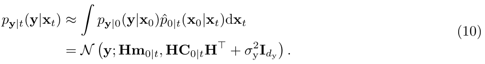
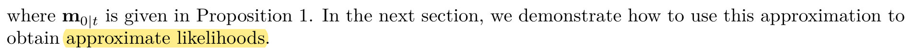
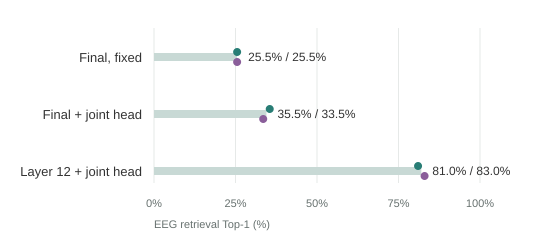
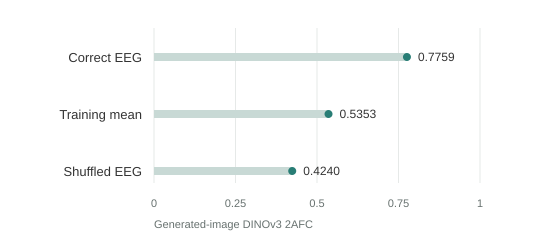

NVOL
EEG-based Visual Retrieval and Reconstruction: From Neurally Visible Optimal Layer to Hierarchical Diffusion Generation

Original contribution paragraph · p.2

从看图时的脑电中读取视觉证据，让生成图片更接近所见内容。近期最明确的进展在视觉表征；生成端已看到配对作用，精确内容恢复仍有距离。
EEG-based Visual Retrieval and Reconstruction: From Neurally Visible Optimal Layer to Hierarchical Diffusion Generation
Learning Brain Representation with Hierarchical Visual Embeddings


Tweedie Moment Projected Diffusions For Inverse Problems


这三篇分别对应三个问题：EEG 应对齐哪一层视觉表征；学到的表征怎样接入生成器；观测与去噪的不确定性怎样进入后验近似。中间层选择、融合先验和协方差导引都有已有工作，后续贡献需要有更具体的技术差别。

第 12 层联合头平均 82.0%，相对末层联合头提高 47.5 个百分点。
全 16,540 张训练图；mean80 表示 80 次重复平均。视觉输入宽度与头参数也有变化。这里评价检索，不能解释为 82% 的图片被还原。聚合数据

正确减打乱 +0.3519，归档的配对图片 95% 区间 [+0.2569, +0.4513]。
2AFC 比较匹配图与其余 199 张真图。200 图库 Top-1 仍只有 1/32；配对优势尚未变成精确恢复。聚合数据
归档预固定 8 个样例中的前 3 个，展示四个条件；省略 reduced EEG 与 reduced + shrinkage。下面全部是生成结果，未展示刺激原图。未按效果重新挑选或增强图片。


* 真图嵌入列是不可部署的生成参考，不是刺激照片，也不计入 EEG-only 成绩。
| 匹配比较 | Δ DINO2AFC | 描述性 95% 区间 |
|---|---|---|
| v - epsilon | +0.2560 | [+0.1557, +0.3533] |
| v - norm-corrected regression | +0.0600 | [-0.0227, +0.1431] |
| v - original EEG query | +0.0020 | [-0.0645, +0.0660] |
相对原 EEG 查询的区间跨零。标准 v 属于既有方法，不能把修复弱参照当作原创生成优势。
| 方法 | 200-way R@1 |
|---|---|
| R1-trained prior | 5.67% |
| R4-trained prior | 11.33% |
| 直接 EEG 编码 | 17.50% |
R4−R1 为 +5.67 pp [2.50, 9.17]，仍低于直接编码。与 mean80 不同，不跨协议排名。
| 与下一步最相关的尝试 | 实际观察 | 含义 |
|---|---|---|
| 把教师监督移到适配器之后 | 图像 ΔDINO2AFC −0.0861 | 接口一致性没有自动变成收益 |
| 直接使用 EEG 图像证据梯度 | 0.5927，低于点回归的 0.7198 | 内部匹配分数不能代替独立图像评价 |
| 补回隐变量均值与尺度 | 扩展复核 Δ+0.0005，区间跨零 | 初始线索没有在扩大样本后保住 |
三行各属不同实验，不作横向性能排名。其他重复融合、score-PDE、残差纠偏与 SORT 的结果见 完整实验记录；对应源码见 代码索引。
哪些 EEG 方向真正提供视觉信息？生成到当前一步时，应该信任多少？
重复一致只能说明测量的部分稳定性，不能说明稳定成分都与视觉内容相关。候选方案先用训练内 EEG–图片配对区分测量误差和视觉映射误差，再在新概念上检验，最后让观测误差与去噪不确定性共同决定导引。
线性 Gaussian 参考：U = AX₀ + η，η ∼ N(0,Σₑ)，X₀ | xₜ ∼ N(mₜ,Cₜ)，则 U | xₜ ∼ N(Amₜ,Vₜ)。A 是视觉到 EEG 特征的映射，不是导联场。这个经典公式及 TMPD 思路不作为我们的新定理；非 Gaussian 性、状态相关协方差和模型误设仍需处理。
训练内拟合，在新概念检验覆盖、残差与视觉预测；不能只凭重复一致性指定置信度。
固定强 EEG 编码器和图像生成器，对照直接回归、标准 prior、既有后验近似与新候选。
每 query/seed 一张，正确/打乱/缺失 EEG 分列；同时评价内容、质量、多样性和推理成本。
待检验假设：经过校验的观测可靠性，能在相同生成预算下提高图片内容忠实度。该候选尚未启动，当前没有稳定的原创扩散图像优势。
GitHub 仓库 · 实验与源码对应表 · 复现范围 · 作图数据 CSV
git clone https://github.com/Botwwt/EEG-Diffusion.git cd EEG-Diffusion python -m pip install -e '.[test]' eeg-diffusion verify python -m pytest -q
以上运行文件完整性、聚合数值核对与数值单元测试，不执行 GPU 训练。旧训练/采样源码按原始哈希保存；完整重跑还需外部数据、权重、缓存及旧环境。报告由公开聚合值重建，本次未新增实验。